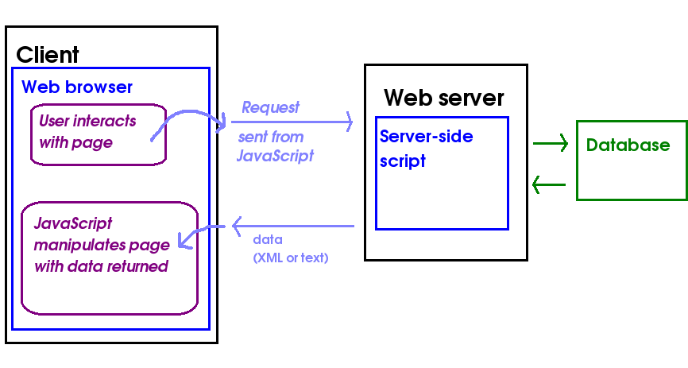

Asynchronous JavaScript and XML
Llamadas asíncronas al servidor para coger datos json o xml
Lo que permite cambiar partes de la página sin recargarla entera

<script>
$(function(){ // jQuery
var response
$.get( "/get_dni", function (r) {
response = r
})
console.log(response) // undefined
})
</script>
from django.http import JsonResponse
def responde(request):
nombre = request.GET.get('nombre', '')
data = {
'dni': Consulta_dni_de(nombre)
}
return JsonResponse(data) # podría ser string o HTML